← 返回阅读库 · 原论文目录
论文讲解阅读文档 · 机器人学 · v124
Visionary Vision architecture discovery for robot learning[2103.14633]
视频时长 00:10:30；讲解文字 4,671 字符；提取讲解画面 35 张。按视频原顺序阅读，每段文字保留时间戳。
文字来自整段视频的自动语音转写，按自然停顿分段，并与 PPT / 论文页面 / 演示画面对齐。未将讲解压缩为摘要；术语、数字和口述公式请结合画面及原论文核对。 阅读稿已校正规范部分明确术语误识别；原始逐字稿和每处修改记录另行保留。
讲解画面为源视频截图（640×360），不是可编辑 PPT 文件。全片按每秒 2 帧扫描内容变化，逐步展开页保留；连续动画保留代表画面。清晰度受源视频限制。
下载完整资料包 · 含离线 HTML、PDF、Word、全部 PPT 画面和字幕。
原论文与材料
Visionary: Vision architecture discovery for robot learning · 下载完整 PDF（7 页）
按时间阅读
00:00:00–00:00:18 · 画面 001
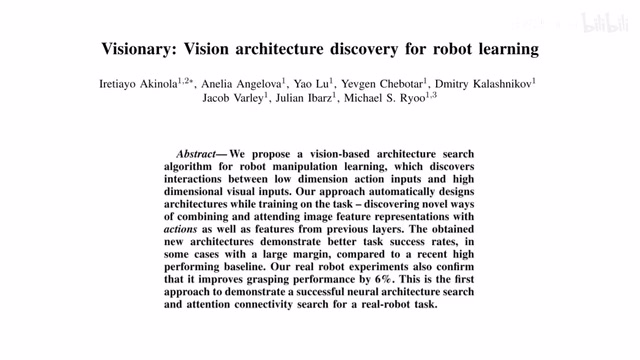
00:00:00–00:00:18 · 画面 001大家好今天我们来快速说一篇论文 VisionaryVision Architecture Discovery for Robot Learning 这篇论文的核心的思想就是把我们原来 NAS 也就是 Neural Architecture Search 它的这一套东西搬到我们 Reinforcement Learning 的实验当中首先网络结构搜索和强化学习它们结合在一起是非常困难一个任务不然为什么说到现在才有这样一篇文章呢
00:00:18–00:01:00 · 画面 002
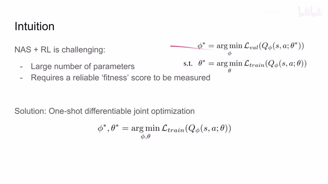
00:00:18–00:01:00 · 画面 002它的主要困难就在于你像我们在传统的进行网络结构搜索的时候呢我们实际上是套了两层的这个循环从外层来说呢我们想要找到一种网络的连接方式这里呢是接受 Find 形式同时呢我们在测试每一种这个网络连接方式的时候呢我们都要训练这一种特定连接形式下的网络也就是说呢我们为了确定说这个网络结构它的潜力到底如何呢我们需要把这个网络结构呢给它训练一遍这里面训练的这个参数呢就是θ但是呢这种思路呢在这个 reinforcement learning 里面呢又显得不那么好用了这里呢我们主要面临了两大困难第一个困难呢就是说首先我们还是一如既往的这个我们要搜索这个参数的量然后网络连接的可能的方式实在是太大了你要每一个都试一遍的话那计算量实在是太大了那么就算你真的有计算能力把这些所有的可能的连接方式都算出来那你用啥发片论文呢对吧
00:01:00–00:01:08 · 画面 003
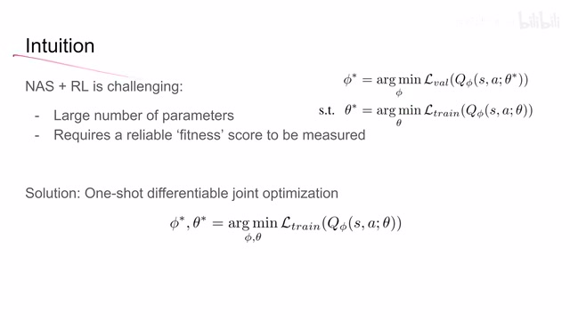
00:01:00–00:01:08 · 画面 00300:01:08–00:01:53 · 画面 004
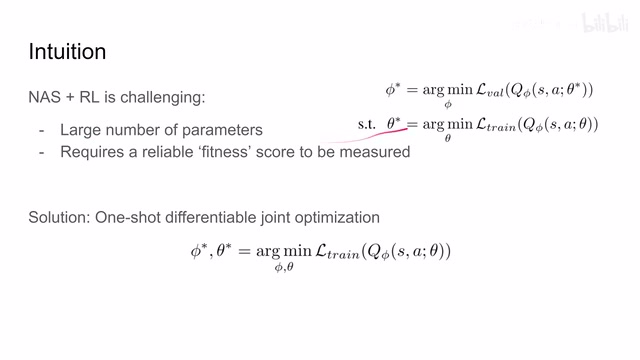
00:01:08–00:01:53 · 画面 004那么第二个困难也是 reinforcement learning 相对于其他的传统的 image classification 这种任务它的一个特点RL 是缺乏一个稳定的 Fitness Score 也就是说我缺乏一个途径去很好的评价我的网络结构因为 RL 训练起来太不稳定了最简单的例子你完全相同的参数对吧你随机的种子改一下它最后出来的性能可能就是天壤之别这两个问题就导致了我们就不能直接使用传统的两层这种循环的形式来进行网络结构的搜索那么为了解决以上这些问题
00:01:53–00:01:57 · 画面 005
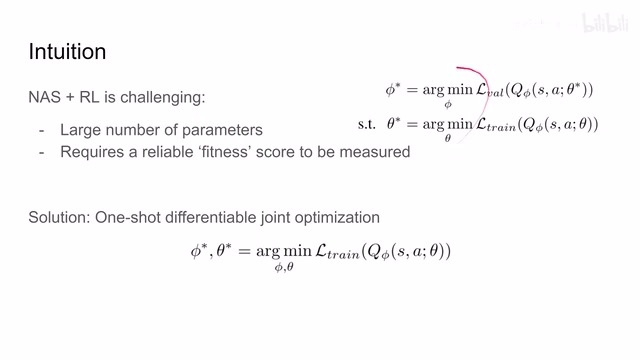
00:01:53–00:01:57 · 画面 00500:01:57–00:02:03 · 画面 006
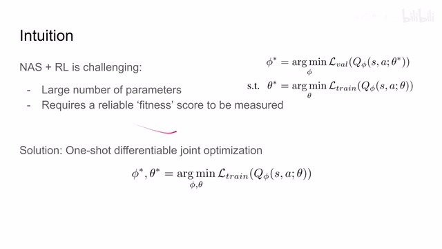
00:01:57–00:02:03 · 画面 006本文的作者提出了这个 one-shot differentiable joint optimization 也就是说呢他把网络结构搜索的过程呢变成 differentiable 也就是可以差分的这样子呢我们就可以在一次的优化中既优化网络结构同时呢也优化我们的整个这个 policy 那更具体来说呢其实就是这个 qvalue 呢所以正义看到这个θ呢是我们 qvalue 的参数 y 呢是网络的结构
00:02:03–00:02:04 · 画面 007
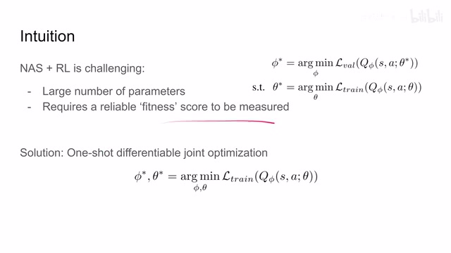
00:02:03–00:02:04 · 画面 00700:02:04–00:02:25 · 画面 008
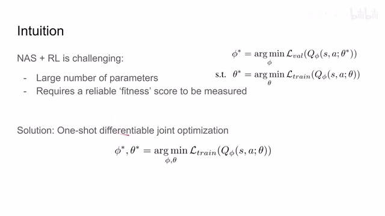
00:02:04–00:02:25 · 画面 008我们在一次训练中把它们一起都优化出来那么最后呢随着我们的这个 q network 训好了我们最优的这个网络结构也就训出来了这是一个非常巧妙的构想那么下面我们就来看本文作者是如何实现这个构想那么在此之前呢首先我们要再次明确一下作者想要解决的问题这里呢作者想要知道我们在这个 q network 当中呢如何结合这个 action 和这个 state
00:02:25–00:02:26 · 画面 009
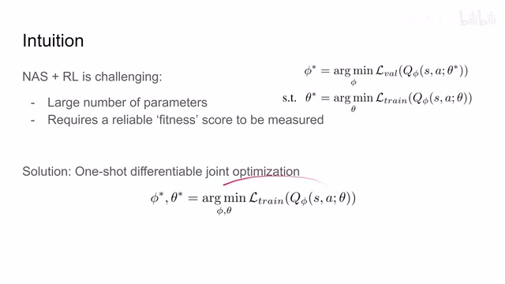
00:02:25–00:02:26 · 画面 00900:02:26–00:02:38 · 画面 010
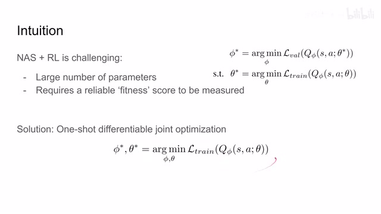
00:02:26–00:02:38 · 画面 01000:02:38–00:03:04 · 画面 011
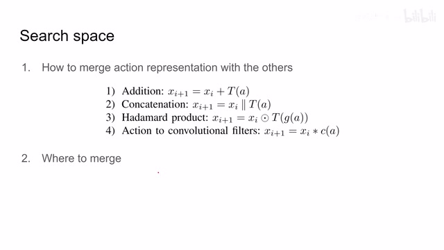
00:02:38–00:03:04 · 画面 011那这两个我究竟应该怎么样融合在什么地方融合这个呢就是本文作者要探讨的东西那么这里呢我们给他的作者尝试了四种这个融合的方法那么下面呢我们就来看作者是怎么样对这两个问题进行搜索那么首先第一个就是这个 action merging search 也就是我怎么样把 action 和 state 的 representation 给它合并起来那么像传统的方法呢比如说最简单的这个加法
00:03:04–00:03:11 · 画面 012
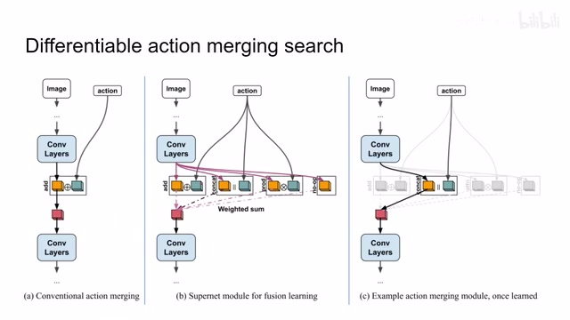
00:03:04–00:03:11 · 画面 01200:03:11–00:03:17 · 画面 013
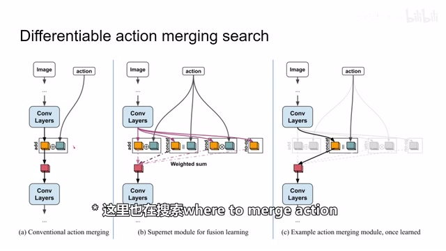
00:03:11–00:03:17 · 画面 013就是两个 state 两个 vector 嘛对吧给它加起来就完事那么本文呢想要尝试不同的 merge 的方法同时呢最关键的一点是让它可以差分的也就是说我们能够在训练这个网络的参数过程中呢自然而然的把这个结构给它优化出来比如说这里呢我们有直接相加然后串接还有这个乘起来的一个形式这三种串接的形式那这里呢首先我们看到作者把这个 state representation 和 action representation 呢把它们分别计算
00:03:17–00:04:42 · 画面 014
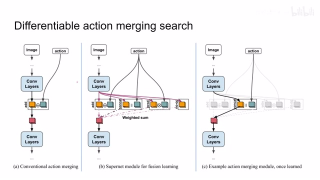
00:03:17–00:04:42 · 画面 014这三种形式得出来的给我们一个结果包括了我们在这一层什么都不做就是不连接 action 得出来一个结果然后呢计算这些结果的加权和注意这里的这些权重呢都是我们需要进行学习的那么很自然而然的你就想到随着我们训练的继续那这些权重呢它肯定有一个是最大的那么当我们整个这个联合的训练结束之后呢我们只保留这个权重最大的连接那它是不是就可以近似代表我们训练好的网络就帮助我们把其他的这些选项就屏蔽掉了另一种意义上呢也就告诉我们在这个连接层次呢我们需要用什么样的连接方式来进行了那么假如说这里呢比如说我们训练好了之后最后呢发现这个权重就是串接的权重它的这个它的值是最大的那么这也就意味着我们最终搜索到网络呢是直接使用串接的形式就是我们最终想要输出的答案
那么我们继续来看这里的 ActionMergingSearch 这里作者把这个模块称作 SuperNetModule 那么它就是有这些不同的 Width 这些 Width 是我们需要学习的把这些 Width 过了 Softmax 之后和它对应的这些模块相乘结合起来就是我们 SuperModule 的它的输出就是这里
00:04:42–00:04:57 · 画面 015
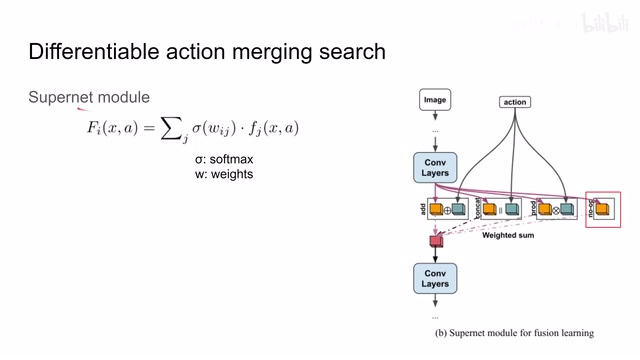
00:04:42–00:04:57 · 画面 01500:04:57–00:04:59 · 画面 016
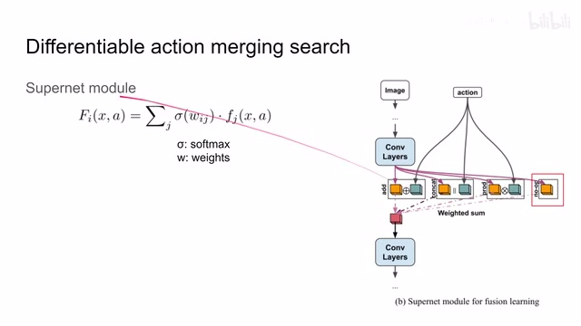
00:04:57–00:04:59 · 画面 01600:04:59–00:05:07 · 画面 017
00:04:59–00:05:07 · 画面 017那么随着网络的训练正如我们之前所提到的我们把 weight 训练出来取最大的 weight 它所代表的之路就是我们最终网络中所要保留的连接的方式那么这个就是我们在搜索如何把 action representation 和 state representation 给它合并起来那么下面我们再看从网络结构中的哪里进行合并这里作者引入了 differentiable attention connectivity search 更具体来说这里作者引用了 peer attention
00:05:07–00:05:17 · 画面 018
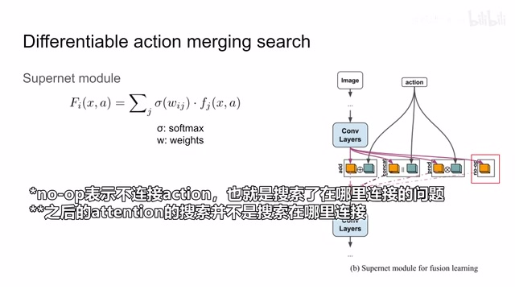
00:05:07–00:05:17 · 画面 01800:05:17–00:05:20 · 画面 019
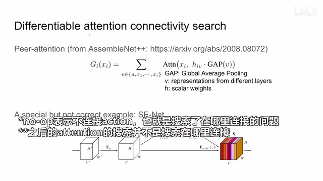
00:05:17–00:05:20 · 画面 01900:05:20–00:05:33 · 画面 020
00:05:20–00:05:33 · 画面 020这个 peer attention 的思想呢是在这个 AssembleNet++这篇论文里面感兴趣的朋友呢可以去详细看一眼这篇论文呢是做这个视频的识别的那么 peer attention 的核心思想呢就是我当前层的输出等于我上一层的输入加上其他各个层给我的这个 channel wise 的 attention 之后汇总起来得到一个输出那么具体来看比如说我在 dxi 层之后开始进行搜索那么我搜索的空间呢就包括从 xc 到 xi 所有层它的输出
00:05:33–00:05:34 · 画面 021
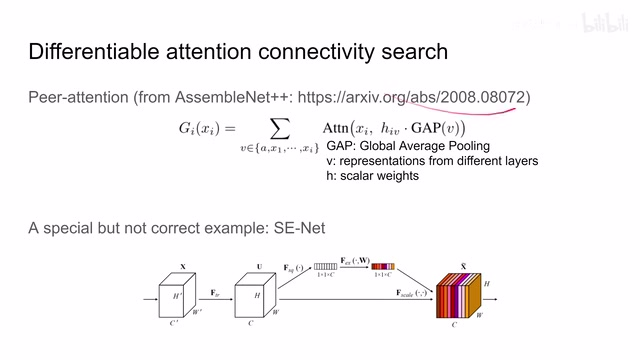
00:05:33–00:05:34 · 画面 02100:05:34–00:07:34 · 画面 022
00:05:34–00:07:34 · 画面 022同时还包括 action representation 那么具体怎么样搜索我们看到 v 是表示这些层它们的输出我们这里先用 gap 方式也就是 global average pooling他的意思呢就是 channelwise 做这个 average pooling 也就是说呢把这个 tensor 它的每一个 channel 求平均这里呢假如说我们这个 tensor 它的这个 spatial resolution 是 n 乘 n 那么它有 c 个 channel 那么整个这个 tensor 的尺寸呢是 n 乘 n 乘 c 那么过了这个 gap 之后呢它就变成了 1 乘 1 乘 c 就像这个 senet 里面这个过程
那么这个呢就是这个 global fg pooling 那么它呢呈上这个权重 h 这个 h 呢它的作用呢跟我们上一节刚刚介绍这个 w 它的意思呢是一样的就是用这个权重来表示哪一层的输入对我们当前的这一层的输出影响最大而且呢这个 H 呢是一个 learnable 的可学习的这么一个变量比如说训练完了之后呢我们选这个最大的这个权重就是我们最后要连接的方式那么这两项结合起来呢它就给我们一个 attention vector 它的尺寸呢就应该是一个 1 乘 1 乘 C 那么结合这一层的输入这个 XI 我们就可以做这个 channelwise 的 attention 那么这样子呢我们把每一个 representation 其实就是每一个靠路上的 layer 它的输出啊都搞这么一幅
啊计算出来然后呢最后呢把 slow 的这些求个和作为这一层 peer attention 他的输出随着大网络的训练呢最后我们得到这个 h 呢就是我们最终想要知道的这个网络连接的方式那么这里呢你可以看到当 v 正好等于 x 的时候他其实就是一个很特殊的 case 但并不完全一样就是 s index 里面这个 channelwise 的 attention 那这个 gap 呢就是就相当于这一步操作
00:07:34–00:07:48 · 画面 023
00:07:34–00:07:48 · 画面 023只不过这里本文提出的方法没有这一层 mlp 的操作那么到这里我们已经解决了该如何 merge action 同时在哪里 merge action 这两个问题那么下面我们就来看作者最终 search 的网络是长什么样子你可以看到这一个是作者最终 search 的 architecture 我们的图像进来 action 进来图像过这 convolutional layer 对吧下面它的尺寸过 pooling 下面它的尺寸同时还有不同的分支这里
00:07:48–00:08:29 · 画面 024
00:07:48–00:08:29 · 画面 024这里呢我们看到一个 supernet fusion 也就是说我有不同的方式把 action merge 到这个 state representation 里面然后呢这个 peer attention 你可以看到呢他把之前的这些层的输入呢都作为 attention 的来源最重要的是这个 action 他也作为这个 attention 的来源那么同理呢我们加更多的 convolutional layer 对吧加上更多的这个 fusion 还有 peer attention 这个 layer 然后最后呢给我们得到一个 q value
那么这个呢就是作者实际在训练中搜索需要进行优化的这样一个大的网络结构同时呢本文使用的是 off policy 的方法更确切来说呢是我固定一个大的 replay buffer 从这里面来多次的训练这个网恶这样呢就能够保证我们不同的网络结构都是从同一批的这个数据中训练出来的保证这个公平性
00:08:29–00:08:30 · 画面 025
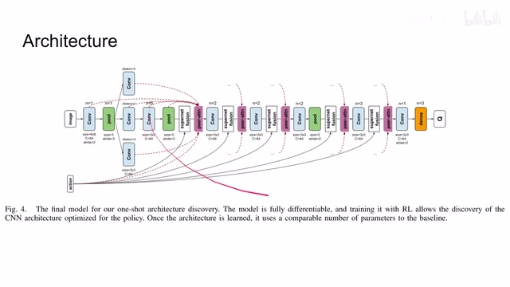
00:08:29–00:08:30 · 画面 02500:08:30–00:08:43 · 画面 026
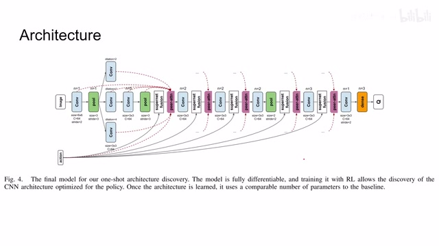
00:08:30–00:08:43 · 画面 02600:08:43–00:08:44 · 画面 027
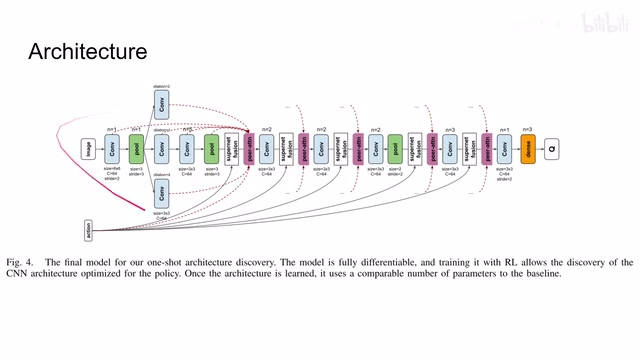
00:08:43–00:08:44 · 画面 02700:08:44–00:08:53 · 画面 028
00:08:44–00:08:53 · 画面 028那么最后我们来看作者汇报的结果吧这里呢作者研究的是这个 block stacking 也就是用机械手把这个方块一个个叠起来这样一个问题它对比的 base line 呢是我们之前介绍的这个 50opt 那可以看到呢本文提出的方法呢成功率相对于这个 base line 高出很多再次证明在这个网络结构这种机械降神面前人类设计人类设计网络结构的这个能力呢实在是太弱小了
00:08:53–00:09:29 · 画面 029
00:08:53–00:09:29 · 画面 029那么这里看到了作者列举出了几个他们通过搜索得到这个网络结构你可以看到它里面内部的这个连接方式还有这个 attention 的处理的方式真的就不是人类说直接设计能够拍脑子想出来的包括这个种但是让人欣慰的是我们人类设计出来这个网络的结构相对于搜索出来的网络结构在很大程度上还是非常相似的我们可以看到这个 action 的连接方式不能说是非常相似只能说是一模一样
00:09:29–00:09:30 · 画面 030
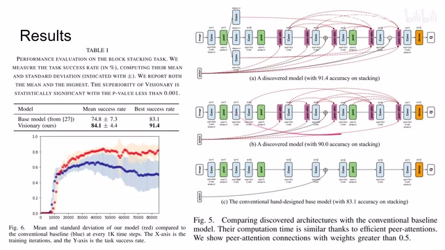
00:09:29–00:09:30 · 画面 03000:09:30–00:09:47 · 画面 031
00:09:30–00:09:47 · 画面 031只能说我们之前的这些努力呢并没有白费那么此外呢作者还汇报 ablation 还有他们在真实世界中在真实的这个机械手环境下发现这个 peer attention 呢贡献是非常大的那相对于传统使用进化的算法做两层循环的这种方法呢本来的方法的性能的提升呢是非常明显的这里呢是在真实的环境下本方法相对于这个 base line
00:09:47–00:10:03 · 画面 032
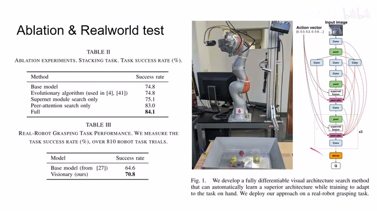
00:09:47–00:10:03 · 画面 03200:10:03–00:10:04 · 画面 033
00:10:03–00:10:04 · 画面 03300:10:04–00:10:29 · 画面 034
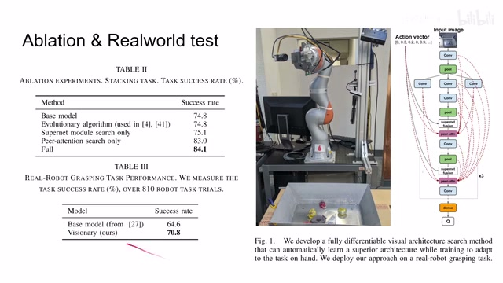
00:10:04–00:10:29 · 画面 034它的这个性能的提升那么总的来说呢本文是非常巧妙的通过这个可以差分的网络结构的设计呢把我们的这个网络结构搜索带入到这个 reinforcement learning 当中但是这个方法呢它也不是凭空变返你可以在之前的 AssembleNet++中呢看到这个方法的不断的进化是一个非常有意思的现象那么以上就是我对这篇论文的简单的分析感谢您的收看再见
00:10:29–00:10:30 · 画面 035
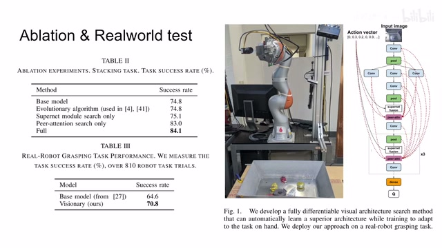
00:10:29–00:10:30 · 画面 035转写与来源说明 · 0 个自动复核提示
保留 26 个原始语音片段，0 个片段触发自动复核提示。提示仅用于定位可能的术语、重复或识别问题，不等于已确认错误。
讲解画面为源视频截图（640×360），不是可编辑 PPT 文件。全片按每秒 2 帧扫描内容变化，逐步展开页保留；连续动画保留代表画面。清晰度受源视频限制。
原视频：paper/合集_2026-10-16_机器人学/[论文简析]Visionary Vision architecture discovery for robot learning[2103.14633].mp4
SHA-256：a62def815e56007d9f7cdbaeee496c04e1a91688a2f68bf191e8f8ca8d5b3358
全文按视频语音与画面制作。原论文可从上方链接下载；完整资料包保留全文、原始逐字稿、字幕和校对记录。